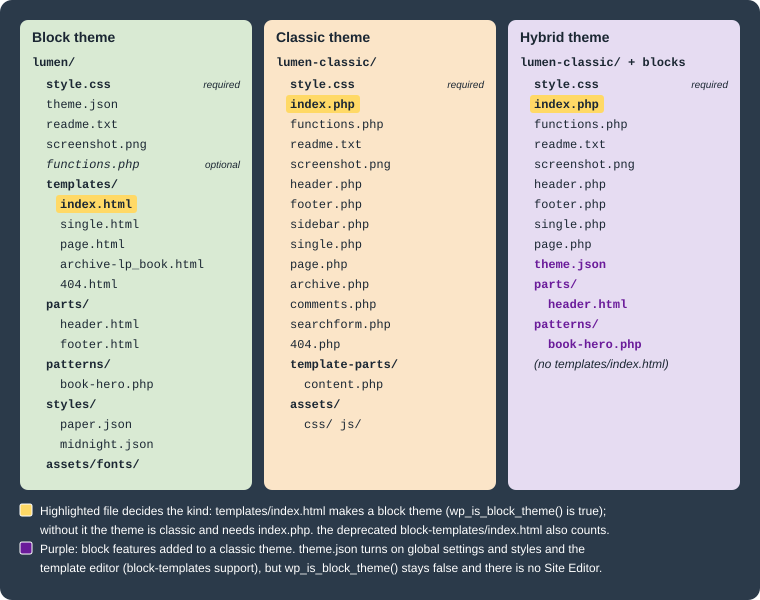

Themes Overview
|
This content was generated with the assistance of AI and should be verified against the official documentation before being relied on in production. |
A WordPress theme decides how the content stored in the database is presented: the page layouts, the header and
footer, colours, fonts and spacing. Every site runs exactly one active theme (optionally a child theme on top of a
parent). This page introduces themes for theme developers and for administrators who choose and deploy them: the three
kinds of theme found in the wild, the rule WordPress uses to tell them apart, the files every theme carries, and the
line between a theme and a plugin. It ends with two working skeletons for the Lumen Press site, the block theme
lumen and the classic theme lumen-classic, activated on a real installation.
This page was written against WordPress 7.1.3 (released 2026-10-06; 7.1.4, a security release of 2026-10-28, is the
version to run in production), PHP 7.4 minimum and 8.3+ recommended, theme.json version 3 (current since 6.6), the
bundled Twenty Twenty-Five 1.5, and WP-CLI 2.12.0, and checked on
2026-10-28. WordPress 7.2 is in beta and due in December 2026 with a new default theme; it does not change how themes
are detected or declared so far.
Templates, theme.json, patterns, style variations, child themes and classic theme files each have their own page,
linked where they come up; this page only introduces them.
What a theme is
A theme is a folder under wp-content/themes/<slug>/. The folder name is the theme’s slug (also called its
stylesheet name); it is what WP-CLI, the database and the code use, while the human-readable name comes from the
Theme Name header in style.css. WordPress represents each installed theme as a WP_Theme object
(wp_get_theme( 'lumen' )) and keeps the active one in two options:
| Option | Meaning |
|---|---|
|
Slug of the active theme, which may be a child theme. |
|
Slug of the theme that supplies the templates: the parent when a child theme is active, otherwise the same as |
The division of labour is the one the Theme Handbook states: a theme handles presentation, plugins handle behaviour. Anything the site would lose when the owner switches to another theme (a custom post type, a shortcode inside posts, an SEO field) does not belong in a theme. That rule is described in detail in Plugin territory below.
Site owners choose a theme and, with a block theme, change its design in the Site Editor; administrators install, update and remove themes (Choosing and Managing Plugins and Themes); theme developers write the files described here and in the rest of the Block Themes and Classic Themes groups.
Block, classic and hybrid themes
WordPress supports two theme systems side by side, and a common mix of the two.
| Block theme | Classic theme | Hybrid theme | |
|---|---|---|---|
Since |
5.9 (January 2022), with |
1.5 (2005) |
Community term, not an official type |
Templates |
HTML files of serialized block markup in |
PHP files ( |
PHP templates, plus some block features |
Design settings |
|
|
|
Who edits the layout |
Site owner in the Site Editor (Appearance > Editor) |
Developer in PHP; owner through Customizer options, Menus and Widgets |
Developer in PHP; owner through the Customizer and the Style Book (6.8+) |
Detected as |
Block theme: |
Classic |
Classic: |
Required files |
|
|
|
A block theme is built entirely from blocks. Its templates contain the same markup the editor saves, so the site
owner can open any template in the Site Editor, change it and save the change to the database. Every bundled default
theme since Twenty Twenty-Two (5.9) is a block theme. This is the kind the Theme Handbook focuses on and the kind
Lumen Press uses for its site (lumen, with lumen-child described in
Child Themes).
A classic theme builds its pages with PHP templates that WordPress chooses through the template hierarchy. It is
still fully supported, and many commercial themes and older sites use one. Its design surface for the owner is the
Customizer, the Menus screen and the Widgets screen. Lumen Press keeps lumen-classic only to teach classic themes
and the migration path.
A hybrid theme is a classic theme that adopts some block features: a theme.json file, block template parts
rendered with block_template_part(), block patterns in patterns/, or add_theme_support( 'block-template-parts' )
(6.1) so that the owner can edit those parts. The Theme Handbook stresses that hybrid themes are still classic themes:
there is no Site Editor and the PHP template hierarchy still renders pages. The road from classic through hybrid to
block is described in
Hybrid Themes and Migration to Block Themes.

How WordPress decides which kind a theme is
The decision is made by one file. WP_Theme::is_block_theme() (5.9) returns true when the theme folder contains a
readable templates/index.html, or the deprecated block-templates/index.html used by early Gutenberg block themes.
Nothing else counts: a theme.json file, a parts/ folder or a Tags: full-site-editing header does not make a theme
a block theme. For a child theme, the file is looked up in the child first and then in the parent, so a child of a
block theme is a block theme even without its own templates/ folder.
| Function | Since | Returns |
|---|---|---|
|
5.9 |
Whether the active theme is a block theme ( |
|
5.9 |
The same test for any installed theme: |
|
6.2 |
Whether the active theme, or its parent, ships a |
|
5.8 |
Whether the template editor is enabled. |
Being detected as a block theme switches on a series of behaviours in core:
-
_add_default_theme_supports()addspost-thumbnails,responsive-embeds,editor-styles,html5(for comment forms, search forms, galleries, captions, styles and scripts) andautomatic-feed-links, and turns on separate, on-demand loading of core block styles. A block theme does not need afunctions.phpto get them. -
The front end is rendered by the block template loader (
templates/*.htmlresolved through the template hierarchy) instead of PHP templates; a<main>element gets an automatic skip link. -
Appearance > Editor (the Site Editor) appears; Customize, Menus and Widgets are hidden unless something hooks into the Customizer or declares menu or widget support. The admin menu for each kind of theme is described in Site Editor and Global Styles.
The theme is also checked when it is read: WP_Theme stores an error, shown under "Broken Themes" at the bottom of
Appearance > Themes, when the folder cannot be used.
| Error code | Cause |
|---|---|
|
The folder has no |
|
A standalone theme has neither |
|
The |
|
The |
|
Recovery mode paused the theme after a fatal error. |
Activation adds a second check: switch_theme() calls validate_theme_requirements() (5.5), which compares the
Requires at least and Requires PHP headers with the running WordPress and PHP and refuses the switch with
theme_wp_incompatible, theme_php_incompatible or theme_wp_php_incompatible. Since 6.9 the
validate_theme_requirements filter lets an administrator add further checks. Until 5.8 these values could also come
from readme.txt; now only style.css is read.
Anatomy of a theme folder
The files and folders a theme can contain, with the page that covers each one:
| Path | Kind | Purpose |
|---|---|---|
|
all, required |
Theme header (metadata), optionally CSS. Described below. |
|
block, required |
The last fallback template; its presence makes a block theme. Other templates ( |
|
block, hybrid |
Template parts such as |
|
block (in practice required), hybrid |
Global settings and styles: theme.json Settings and theme.json Styles. |
|
block, hybrid |
Block patterns registered automatically from their file header: Theme Patterns. |
|
block |
Style variations ("Paper", "Midnight") and section styles: Style Variations and Section Styles. |
|
all, optional for block themes |
Loaded on every request after the theme is set up; theme supports, asset enqueueing, pattern categories: functions.php, Theme Supports and Assets. |
|
classic, required |
The last fallback PHP template: Classic Theme Anatomy and The Loop. |
|
classic |
PHP template parts loaded with |
|
all |
Not read by WordPress; required by the Theme Directory. Described below. |
|
all |
Preview in Appearance > Themes. Described below. |
|
all |
Conventional folders for CSS, JavaScript, fonts and images, PHP includes, and translations ( |
|
all |
Build and repository files; excluded from the release zip: Create Block Theme and Version Control. |
The style.css header
style.css must start with a comment block of Name: value lines. WordPress reads the first 8 KB of the file with
get_file_data(); only Theme Name is needed for the theme to appear in the admin, and the rest are required by the
Theme Directory or used by specific features.
| Header | Required | Meaning |
|---|---|---|
|
always |
Name shown in Appearance > Themes. The Theme Directory rejects names containing "WordPress", "Theme" or "Twenty". |
|
no |
Public page about the theme. |
|
Directory |
Person or organization, and its web page. |
|
Directory |
Text shown in the theme details overlay. |
|
Directory |
The theme’s version ( |
|
Directory |
Oldest WordPress version supported, as |
|
Directory |
Latest WordPress version tested. WordPress itself does not parse it; the directory displays it. |
|
Directory |
Oldest PHP version supported, as |
|
Directory |
Must be GPL-compatible; the Themes Team strongly recommends "GPLv2 or later". |
|
Directory |
Translation domain. It must equal the theme slug ( |
|
no |
Folder of translation files, relative to the theme; defaults to |
|
no |
Comma-separated feature tags from the Theme Directory’s list ( |
|
child themes |
Folder name (slug) of the parent theme. Its presence is what makes a theme a child theme: Child Themes. |
|
no |
Since 6.1. A URL whose host is not |
WP_Theme also recognizes a legacy Status header. Other headers are allowed (marketplaces add their own) but
WordPress ignores them. The values are read with wp_get_theme()->get( 'Version' ), and the translated, escaped
versions with wp_get_theme()->display( 'Name' ).
Since a block theme rarely needs hand-written CSS (its styles live in theme.json), its style.css is often only the
header. A classic theme usually keeps its main CSS there, and must enqueue the file rather than link it from a template
(see the lumen-classic example below).
readme.txt and screenshot.png
readme.txt is not read by WordPress at runtime. The Theme Directory requires it, and it is where the theme documents
for users what it does, its changelog, the copyright and licence of every bundled resource (fonts, images, icons) and
any user data it collects. The format mirrors plugin readmes: a header with the name and the Contributors,
Requires at least, Tested up to, Requires PHP, License and License URI fields, a short description of at most
150 characters, then sections such as == Description ==, == Frequently Asked Questions ==, == Changelog ==,
== Upgrade Notice == and == Copyright == or == Resources ==.
screenshot.png (or .jpg, .jpeg, .gif, .webp, .avif) in the theme root is the preview in Appearance > Themes and on
the directory page. The recommended size is 1200 × 900 pixels; the Theme Directory requires a 4:3 ratio, no larger than
1200 × 900, and a picture of the theme itself rather than an advertisement. A theme without one shows a blank card.
wp_get_theme()->get_screenshot() returns its URL.
A minimal block theme: lumen
The smallest useful block theme has four files: the header in style.css, theme.json, templates/index.html and
readme.txt. WordPress would accept the theme with style.css and templates/index.html alone, but without
theme.json the editor offers no theme palette or layout widths, and the Theme Directory requires both theme.json and
readme.txt for block themes.
wp-content/themes/lumen/
├── readme.txt
├── style.css
├── templates/
│ └── index.html
└── theme.jsonSource: Theme Handbook: Theme Structure
/*
Theme Name: Lumen
Theme URI: https://lumenpress.example/
Author: Lumen Press
Author URI: https://lumenpress.example/
Description: Block theme for the Lumen Press catalogue, news and author pages.
Version: 0.1.0
Requires at least: 6.9
Tested up to: 7.1
Requires PHP: 7.4
License: GNU General Public License v2 or later
License URI: https://www.gnu.org/licenses/gpl-2.0.html
Text Domain: lumen
Tags: block-patterns, full-site-editing, blog, one-column
*/Requires at least: 6.9 matches the lumen-catalog plugin the theme presents; theme.json version 3 alone would allow
6.6.
{
"$schema": "https://schemas.wp.org/wp/7.1/theme.json",
"version": 3,
"settings": {
"appearanceTools": true,
"color": {
"palette": [
{ "slug": "paper", "name": "Paper", "color": "#fbf8f1" },
{ "slug": "ink", "name": "Ink", "color": "#1f1d1a" },
{ "slug": "lumen-red", "name": "Lumen red", "color": "#a3271f" }
]
},
"layout": {
"contentSize": "680px",
"wideSize": "1140px"
}
},
"styles": {
"color": {
"background": "var(--wp--preset--color--paper)",
"text": "var(--wp--preset--color--ink)"
},
"elements": {
"link": {
"color": { "text": "var(--wp--preset--color--lumen-red)" }
}
}
}
}The $schema line gives editors autocompletion and validation; version must be 3 to get the current behaviour.
Each palette entry becomes a CSS custom property (--wp--preset--color--lumen-red) and a colour choice in the editor.
The full set of settings and styles is in theme.json Settings and
theme.json Styles.
<!-- wp:group {"tagName":"header","layout":{"type":"constrained"}} -->
<header class="wp-block-group">
<!-- wp:site-title {"level":0} /-->
</header>
<!-- /wp:group -->
<!-- wp:group {"tagName":"main","layout":{"type":"constrained"}} -->
<main class="wp-block-group">
<!-- wp:query {"queryId":1,"query":{"inherit":true}} -->
<div class="wp-block-query">
<!-- wp:post-template -->
<!-- wp:post-title {"isLink":true} /-->
<!-- wp:post-excerpt /-->
<!-- /wp:post-template -->
<!-- wp:query-pagination -->
<!-- wp:query-pagination-previous /-->
<!-- wp:query-pagination-next /-->
<!-- /wp:query-pagination -->
<!-- wp:query-no-results -->
<!-- wp:paragraph -->
<p>Nothing has been published here yet.</p>
<!-- /wp:paragraph -->
<!-- /wp:query-no-results -->
</div>
<!-- /wp:query -->
</main>
<!-- /wp:group -->Source: Theme Handbook: Templates
templates/index.html is a Query Loop that inherits the main query ("inherit":true), so the same file renders the
blog, archives and search results until more specific templates are added. A real theme moves the header into
parts/header.html and adds single.html, page.html and an archive for lp_book; those steps are on
Templates and Template Parts. Hand-written markup
must be valid serialized block markup: an unclosed <!-- /wp:group --> or HTML that does not match what the block
saves shows as an invalid block in the editor.
=== Lumen ===
Contributors: lumenpress
Requires at least: 6.9
Tested up to: 7.1
Requires PHP: 7.4
License: GPLv2 or later
License URI: https://www.gnu.org/licenses/gpl-2.0.html
Block theme for the Lumen Press catalogue, news and author pages.
== Description ==
Lumen styles the book catalogue of the Lumen Catalog plugin, the news blog and the
author pages. Every template and style is editable in the Site Editor.
== Changelog ==
= 0.1.0 =
* First skeleton: style.css, theme.json and the index template.
== Copyright ==
Lumen WordPress Theme, (C) 2026 Lumen Press.
Lumen is distributed under the terms of the GNU GPL v2 or later.Source: Themes Team Handbook: Required
The theme has no functions.php: block themes get their default theme supports from core, and nothing else is needed
yet. The catalogue itself (the lp_book post type, its taxonomies and meta) is registered by the lumen-catalog
plugin, never by the theme.
A minimal classic theme: lumen-classic
The classic counterpart needs style.css and index.php. A functions.php declares theme supports and enqueues the
stylesheet, which a block theme would get from theme.json and core.
wp-content/themes/lumen-classic/
├── functions.php
├── index.php
└── style.cssSource: Theme Handbook: Template Files
/*
Theme Name: Lumen Classic
Description: Classic PHP theme for Lumen Press, kept to teach classic themes and the migration to blocks.
Author: Lumen Press
Version: 0.1.0
Requires at least: 6.9
Tested up to: 7.1
Requires PHP: 7.4
License: GNU General Public License v2 or later
License URI: https://www.gnu.org/licenses/gpl-2.0.html
Text Domain: lumen-classic
*/
body { max-width: 680px; margin: 0 auto; font-family: Georgia, serif; }<?php
/**
* Lumen Classic theme setup.
*
* @package Lumen_Classic
*/
/**
* Declares the features the theme supports.
*/
function lumen_classic_setup() {
add_theme_support( 'title-tag' );
add_theme_support( 'post-thumbnails' );
add_theme_support( 'html5', array( 'search-form', 'comment-form', 'comment-list', 'gallery', 'caption', 'style', 'script' ) );
}
add_action( 'after_setup_theme', 'lumen_classic_setup' );
/**
* Enqueues the theme stylesheet instead of linking it in header markup.
*/
function lumen_classic_enqueue_assets() {
wp_enqueue_style(
'lumen-classic-style',
get_stylesheet_uri(),
array(),
wp_get_theme()->get( 'Version' )
);
}
add_action( 'wp_enqueue_scripts', 'lumen_classic_enqueue_assets' );Source: Theme Handbook: Including Assets
<?php
/**
* The main template file: the last fallback of the template hierarchy.
*
* @package Lumen_Classic
*/
?><!DOCTYPE html>
<html <?php language_attributes(); ?>>
<head>
<meta charset="<?php bloginfo( 'charset' ); ?>">
<meta name="viewport" content="width=device-width, initial-scale=1">
<?php wp_head(); ?>
</head>
<body <?php body_class(); ?>>
<?php wp_body_open(); ?>
<header>
<p><a href="<?php echo esc_url( home_url( '/' ) ); ?>"><?php bloginfo( 'name' ); ?></a></p>
</header>
<main>
<?php if ( have_posts() ) : ?>
<?php
while ( have_posts() ) :
the_post();
?>
<article <?php post_class(); ?>>
<h2><a href="<?php the_permalink(); ?>"><?php the_title(); ?></a></h2>
<?php the_excerpt(); ?>
</article>
<?php endwhile; ?>
<?php the_posts_pagination(); ?>
<?php else : ?>
<p><?php esc_html_e( 'Nothing has been published here yet.', 'lumen-classic' ); ?></p>
<?php endif; ?>
</main>
<?php wp_footer(); ?>
</body>
</html>Source: Theme Handbook: The Loop
The PHP template does by hand what the block template’s Query Loop does: it runs The Loop over the main query and
prints the title and excerpt. wp_head(), wp_body_open() and wp_footer() are mandatory hooks; without them plugins,
the admin bar and enqueued assets (including the theme’s own stylesheet) never reach the page. The title-tag support
lets WordPress print the <title> element. Template tags, The Loop and the rest of the classic file set are covered in
Classic Theme Anatomy and The Loop.
Activating both themes and checking the result
The Compose file below starts MariaDB and a WP-CLI container, installs WordPress 7.1.3 and copies both theme folders
into wp-content/themes/. The standard local stacks (wp-env, Compose with a web server, Playground) are described in
Local Development Environments; this one needs no web server
because WP-CLI’s wp server serves the front end when it is needed. The passwords are placeholders for a local machine.
# compose.yaml, next to a themes/ folder holding lumen/ and lumen-classic/
name: lumen-themes
services:
db:
image: mariadb:11.8
environment:
MARIADB_DATABASE: wordpress
MARIADB_USER: wordpress
MARIADB_PASSWORD: ${WP_DB_PASSWORD:?set WP_DB_PASSWORD}
MARIADB_RANDOM_ROOT_PASSWORD: "1"
tmpfs: [/var/lib/mysql]
cli:
image: wordpress:cli-2.12.0-php8.4
depends_on: [db]
user: "33:33"
environment:
WP_DB_PASSWORD: ${WP_DB_PASSWORD}
WP_ADMIN_PASSWORD: ${WP_ADMIN_PASSWORD:?set WP_ADMIN_PASSWORD}
volumes:
- wp:/var/www/html
- ./themes:/themes:ro
entrypoint: ["sleep", "infinity"]
volumes:
wp: {}export WP_DB_PASSWORD='<a-local-db-password>' WP_ADMIN_PASSWORD='<a-local-admin-password>'
docker compose up -d
docker compose exec cli sh -c '
php -d memory_limit=512M /usr/local/bin/wp core download https://wordpress.org/wordpress-7.1.3.zip &&
wp config create --dbname=wordpress --dbuser=wordpress --dbpass="$WP_DB_PASSWORD" --dbhost=db &&
wp core install --url=https://lumenpress.test --title="Lumen Press" --admin_user=admin \
--admin_email=admin@lumenpress.test --admin_password="$WP_ADMIN_PASSWORD" --skip-email &&
cp -r /themes/lumen /themes/lumen-classic wp-content/themes/'
docker compose exec cli wp theme list --fields=name,status,version,titleSource: WP-CLI Commands: wp theme list
name status version title
lumen-classic inactive 0.1.0 Lumen Classic
lumen inactive 0.1.0 Lumen
twentytwentyfive active 1.5 Twenty Twenty-Five
twentytwentyfour inactive 1.6 Twenty Twenty-Four
twentytwentythree inactive 1.7 Twenty Twenty-ThreeThe WordPress 7.1.3 package ships three default themes, and a fresh install activates Twenty Twenty-Five. The name
column is the slug (the folder name), title the Theme Name header.
The block theme
docker compose exec cli wp theme activate lumen
docker compose exec cli wp eval 'var_dump( wp_is_block_theme(), wp_theme_has_theme_json(), current_theme_supports( "block-templates" ) );'
docker compose exec cli wp theme get lumen --fields=name,version,status,template,stylesheet
docker compose exec cli wp eval '$t = get_block_template( get_stylesheet() . "//index" ); printf( "%s %s %s\n", $t->id, $t->source, $t->type );'Success: Switched to 'Lumen' theme.
bool(true)
bool(true)
bool(true)
Field Value
name Lumen
version 0.1.0
status active
template lumen
stylesheet lumen
lumen//index theme wp_templatetemplate and stylesheet are the same because lumen is not a child theme. The index template has the ID
lumen//index (theme slug, two slashes, template slug) and the source theme, meaning it comes from the file; once the
owner edits it in the Site Editor, a wp_template post overrides it and the source becomes custom.
To see the template render, serve the site with WP-CLI’s built-in server inside the container and request the home page with the site’s host name:
docker compose exec -d cli wp server --host=127.0.0.1 --port=8080
docker compose exec cli php -r '
$c = stream_context_create( array( "http" => array( "header" => "Host: lumenpress.test\r\nX-Forwarded-Proto: https\r\n" ) ) );
$h = file_get_contents( "http://127.0.0.1:8080/", false, $c );
preg_match_all( "/<(header|main)[^>]*>|--wp--preset--color--lumen-red: [^;]+;|--wp--style--global--content-size: [^;]+;/", $h, $m );
print_r( array_values( array_unique( $m[0] ) ) );'Source: WP-CLI Commands: wp server
Array
(
[0] => --wp--preset--color--lumen-red: #a3271f;
[1] => --wp--style--global--content-size: 680px;
[2] => <header class="wp-block-group is-layout-constrained wp-block-group-is-layout-constrained">
[3] => <main id="wp--skip-link--target" class="wp-block-group is-layout-constrained wp-block-group-is-layout-constrained">
)The theme.json palette and layout widths become CSS custom properties, the Group blocks get their layout classes,
and core adds the skip-link target to <main> because the page was rendered from a block template.
The classic theme and a hybrid variant
docker compose exec cli wp theme activate lumen-classic
docker compose exec cli wp eval 'var_dump( wp_is_block_theme(), wp_theme_has_theme_json(), current_theme_supports( "block-templates" ) );'Success: Switched to 'Lumen Classic' theme.
bool(false)
bool(false)
bool(false)The home page now comes from index.php: it has a <title> printed through title-tag, the
lumen-classic-style-css stylesheet link added by wp_enqueue_style(), and one <article> per post.
Adding only a theme.json to a copy of the classic theme turns it into a hybrid theme. The copy below gets a short
theme.json with one palette colour and the content width, and a new Theme Name. Detection does not change, but
the theme now has global settings and styles and the template editor:
docker compose exec cli sh -c '
cp -r wp-content/themes/lumen-classic wp-content/themes/lumen-hybrid
sed -i "s/Theme Name: Lumen Classic/Theme Name: Lumen Hybrid Test/" wp-content/themes/lumen-hybrid/style.css
cat > wp-content/themes/lumen-hybrid/theme.json <<JSON
{
"version": 3,
"settings": {
"color": { "palette": [ { "slug": "lumen-red", "name": "Lumen red", "color": "#a3271f" } ] },
"layout": { "contentSize": "680px" }
}
}
JSON'$ wp theme activate lumen-hybrid
Success: Switched to 'Lumen Hybrid Test' theme.
$ wp eval 'var_dump( wp_is_block_theme(), wp_theme_has_theme_json(), current_theme_supports( "block-templates" ) );'
bool(false)
bool(true)
bool(true)Broken themes and unmet requirements
Three deliberately wrong folders show the checks described earlier: one with only a style.css, one with only an
index.php, and a block theme whose header says Requires at least: 7.5.
docker compose exec cli sh -c '
mkdir -p wp-content/themes/broken-no-index wp-content/themes/broken-no-style wp-content/themes/lumen-future/templates
printf "/*\nTheme Name: Broken No Index\n*/\n" > wp-content/themes/broken-no-index/style.css
echo "<?php" > wp-content/themes/broken-no-style/index.php
printf "/*\nTheme Name: Lumen Future\nRequires at least: 7.5\nRequires PHP: 7.4\n*/\n" > wp-content/themes/lumen-future/style.css
echo "<!-- wp:post-content /-->" > wp-content/themes/lumen-future/templates/index.html'
docker compose exec cli wp eval 'foreach ( wp_get_themes( array( "errors" => true ) ) as $slug => $theme ) {
printf( "%s: %s %s\n", $slug, $theme->errors()->get_error_code(), wp_strip_all_tags( $theme->errors()->get_error_message() ) );
}'
docker compose exec cli wp theme activate lumen-futurebroken-no-index: theme_no_index Template is missing. Standalone themes need to have a templates/index.html or index.php template file. Child themes need to have a Template header in the style.css stylesheet.
broken-no-style: theme_no_stylesheet Stylesheet is missing.
Error: Error: Current WordPress version does not meet minimum requirements for Lumen Future.The broken folders do not appear in wp theme list; the dashboard lists them under "Broken Themes". The theme that
needs 7.5 is listed and can be installed, but activation stops with theme_wp_incompatible.
Remove the stack with docker compose down -v when finished.
Default themes
Each annual default theme is named after the year it was planned for and is maintained by the core team. The
WP_DEFAULT_THEME constant (default twentytwentyfive in 7.1) names the theme activated at install time and used as a
fallback when the active theme disappears; it can be overridden in wp-config.php.
| Theme | First shipped | Notes |
|---|---|---|
Twenty Twenty-Two |
5.9 |
First block default theme, released with the Site Editor. |
Twenty Twenty-Three |
6.1 |
Block theme built around style variations; 1.7 is in the 7.1.3 package. |
Twenty Twenty-Four |
6.4 |
Block theme with many patterns for business, portfolio and writer sites; 1.6 in the 7.1.3 package. |
Twenty Twenty-Five |
6.7 |
The current default; 1.5 is bundled with 7.1. Blog-oriented, with presets |
Ipsum |
7.2 (upcoming) |
Present in the 7.2 betas as a minimal block theme that requires WordPress 7.2. Until 7.2 ships its name, contents and requirements can still change; nothing in the Lumen Press code depends on it. |
Older default themes (Twenty Twenty-One and earlier) are classic themes, still installable from the Theme Directory. Default themes update like any directory theme, so a site customizes them through a child theme, not in place.
Plugin territory
"Plugin territory" is the Themes Team’s name for functionality that must not live in a theme. The test is simple: if switching themes would make content disappear or break, the feature belongs to a plugin. The review requirements for the Theme Directory list, among others:
-
custom post types, custom taxonomies, custom blocks, shortcodes, custom roles, custom user contact methods and custom MIME types
-
analytics or tracking, SEO options, contact forms, non-design meta boxes, caching, social "like" and "share" buttons
-
bundled plugins or plugin zip files, or automatic plugin installation (a theme may recommend plugins from WordPress.org, installed by the user)
-
removing non-presentational hooks from
wp_head, hiding the admin bar, redirecting on activation, or putting WordPress features behind a paywall
For Lumen Press this means the lp_book post type, the lp_genre and lp_series taxonomies, the book meta, the
lumen/v1 REST routes and the lumen/book-card, lumen/latest-books and lumen/wishlist blocks all live in the
lumen-catalog plugin, while the lumen theme only provides templates (such as archive-lp_book.html), patterns and
styles that present them. The rule applies to private themes too, even though only directory themes are reviewed:
it keeps the content independent of the design.
Other requirements that come with the same review and are good practice for any theme:
-
assets are enqueued with
wp_enqueue_style()andwp_enqueue_script(), never printed as hard-coded<link>or<script>tags, and use the JavaScript libraries bundled with WordPress rather than their own copies; -
fonts, scripts and images are bundled with the theme; remote resources need user consent, and fonts are best self-hosted through
theme.jsonfontFaceor the Font Library rather than loaded from Google’s servers, which sends visitors' IP addresses to a third party (see Typography and Fonts); -
everything the theme defines in the global namespace (functions, options, handles, image sizes, pattern categories) is prefixed with the slug, as
lumen_classic_setupandlumen-classic-styleare above; -
all text is translatable with the theme slug as text domain, and output is escaped.
The full review list and the accessibility requirements are covered in Theme Accessibility and Releasing.
What older books get wrong or leave out
| Older advice | Current state (7.1) |
|---|---|
Full site editing arrived in WordPress 5.4 to 5.6 (Pro WordPress) |
Block themes and the Site Editor arrived in 5.9 (January 2022); |
A theme is a set of PHP template files plus |
That describes classic themes. Block themes use HTML block templates and |
Full site editing is "still maturing" and design is best done with a commercial theme and a page builder (Ultimate WordPress Handbook) |
Block themes have been the default for several years. Page builders and commercial themes are one option among others, with trade-offs described in Page Builders and Commercial Themes. |
Block theme walkthroughs based on Twenty Twenty-Three or Twenty Twenty-Four (All-in-One For Dummies) |
Twenty Twenty-Five (6.7) is the default in 7.1, and a new default theme is expected with 7.2. The screens have also moved; see Site Editor and Global Styles. |
Most themes require PHP 8.2 or later (Ultimate WordPress Handbook) |
WordPress 7.1 requires PHP 7.4 and recommends 8.3+. Each theme states its own minimum in |
Adding custom post types, shortcodes or roles from the theme’s |
That is plugin territory: the content or feature disappears when the theme changes. Lumen Press registers them in the |
Loading Google Fonts from Google’s servers in the theme |
Self-host fonts with |
Common errors and pitfalls
| Symptom | Cause and fix |
|---|---|
The theme is listed under "Broken Themes" with "Stylesheet is missing" |
The zip was extracted one level too deep ( |
"Template is missing" |
A standalone theme has neither |
The Site Editor does not appear although the theme has |
Only |
Activation fails with "Current WordPress version does not meet minimum requirements" |
The |
|
It was called before the theme directories were registered (for example in a plugin’s main file). Call it on |
A theme from the directory overwrote a private theme on update |
The private theme uses a slug that exists on WordPress.org. Set an |
Strings do not translate |
|
Theme changes have no effect on templates the owner edited |
Edited templates and parts are stored as |
The site loses its book catalogue after switching themes |
The post type was registered by the old theme. Move it to a plugin (plugin territory). |
Security notes: a theme’s PHP runs with the full privileges of WordPress, exactly like a plugin, so a theme from an
untrusted source (in particular a "nulled" commercial theme) is a common way in for malware; block themes reduce the
amount of PHP but functions.php and patterns/*.php still run. Install themes only from the Theme Directory or known
vendors, delete themes that are not in use (an inactive theme’s PHP files can still be requested directly), and disable
the theme file editor with DISALLOW_FILE_EDIT as described in
Security Hardening.